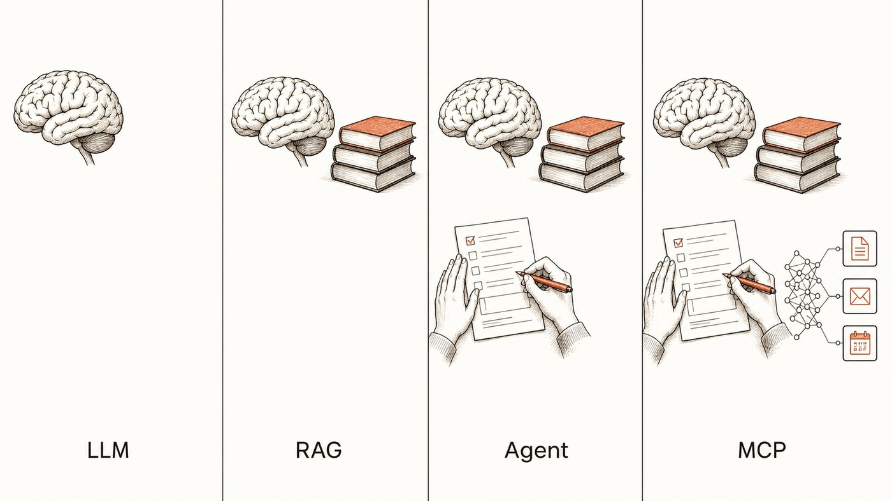

這篇在講什麼
AI 的術語難懂，有很大一部分是因為它們被平行列出來。LLM、RAG、AI Agent、MCP 放在同一張表裡，看起來像四種可以互相取代的工具，實際上它們負責的是不同層的工作，而且會疊在一起用。這篇借用人體的比喻把四層講清楚：LLM 是大腦、RAG 是大腦加一疊書、AI Agent 是大腦加一雙手、MCP 是神經系統。四段用同一個問題貫穿，你會看到同一句提問在不同層得到什麼樣的回答。最後給一張自我檢查表，和一個補的順序建議。
- 聽過這些詞，但每次看到都要重查一遍的人
- 想在公司導入 AI，被廠商的術語清單淹沒，不知道該買哪一層的人
- 已經在用 ChatGPT 或 Claude，覺得哪裡卡住但說不出哪裡的人
- 一組四層對照，看任何 AI 產品的說明時，可以判斷它在講哪一層
- 一張自我檢查表，看你手上的 AI 缺書、缺手，還是缺神經系統
- 一個補的順序建議，以及背後的理由

一、這四個詞為什麼特別難懂
問題不在詞本身，在它們被擺放的方式。
大部分的整理文會把 LLM、RAG、AI Agent、MCP 排成一張表，四列並排，每列一個定義。這種排法會傳達一個沒有明說的訊息：這是四個選項，你要挑一個。
於是最常出現的問題就變成「所以哪個比較厲害」「我該學哪一個」。
我看過一張用人體來比喻的圖，那個角度比較貼近實際情況。四個詞對應的是身體的四個部位：
- LLM 是大腦
- RAG 是大腦加一疊書
- AI Agent 是大腦加一雙手
- MCP 是神經系統
二、同一個問題，四層各自怎麼回答
為了讓差別看得出來，接下來四段我都問同一句話：「公司出差費怎麼報？」
LLM ＝ 大腦
LLM 就是 ChatGPT、Claude、Gemini 這些會講話的模型本體。你問它，它用訓練時記住的東西回答。
問公司出差費怎麼報
答一般公司大多是憑發票核銷，通常要在期限內附上單據。
答案不算錯，但它講的是通則。它不知道你們公司的差旅辦法寫什麼、期限是三天還是七天、要不要主管先簽。
這一層的能力邊界很清楚：它只知道訓練資料裡有的東西。你公司內部的文件、上週開會的決議、昨天改的規則，它都不知道。
RAG ＝ 大腦加一疊書
RAG 的做法是在大腦旁邊放一疊書。你問問題的時候，系統先去書裡（你的文件、資料庫、筆記）翻出相關段落，把那幾段連同你的問題一起交給大腦，大腦看著資料回答。
問公司出差費怎麼報
答依你們的差旅辦法，三天內附發票，超過五千元要主管先簽。
差別是答案有出處，你可以回頭查那份文件確認。
這一層要成立，前提是你的資料本身找得到。同一份規則有三個版本散在信箱、雲端硬碟和某個人的電腦裡，翻書這個動作就會翻出互相矛盾的答案。
我自己知識庫的做法是先把資料整理成有結構、彼此連得起來的樣子，再加上語意檢索。查得準與否，很大一部分是在資料整理階段決定的，不是在檢索技術。
- 資料越堆越多，AI 反而找不到怎麼辦？：標籤連結法 Tag Wiki 這段講的是 RAG 在做什麼，那篇講的是我怎麼整理這疊書，讓 AI 翻得到。
AI Agent ＝ 大腦加一雙手
前面兩層都只會講話。Agent 這一層是會動手的：能開檔案、改檔案、跑指令、上網查、呼叫其他工具，而且記得剛才做過什麼，一步一步把事情做完。
問公司出差費怎麼報
答查好了，報銷單我照差旅辦法填好了，要送出嗎？
從「告訴你怎麼做」變成「做完給你看」。
這一層的價值不在它會不會講，在它省掉的那段人工搬運。你原本要自己開表單、自己複製貼上、自己核對格式，這些動作它可以接手。
- AI Agent 怎麼幫我們直接操作軟體？ 這段講的是「手」這個概念，那篇是操作面：AI 到底透過什麼方式碰到你電腦裡的軟體。
MCP ＝ 神經系統
Agent 要用工具，總得有個接法。以前每接一個新工具就要為它寫一套對接，接十個工具就寫十套。
MCP 是一套統一的接口規格，一邊接 AI，一邊接你的表單系統、信箱、行事曆、資料庫。
問公司出差費怎麼報
答要回答這句，它得碰到三個地方：差旅辦法的文件、報銷表單系統、簽核用的信箱。MCP 決定的是它用什麼方式碰到這三個地方。
這一層讀者通常感覺不到，因為它不直接產出東西。它的影響會出現在另一個地方：接第十一個工具的時候，你是照同一套規格接上去，還是又要從頭寫一套。
三、有了後面那層，前面還是在跑
最容易誤會的地方在這裡。四個詞排成一列的時候，很像從左到右一路進化，好像有了後面的就可以丟掉前面的。
實際上每一層都還在跑：
| 常見誤會 | 實際情況 |
|---|---|
| Agent 比 RAG 高一階，有 Agent 就不用 RAG | Agent 要用到你的內部資料時，一樣得先查一輪，那一輪就是 RAG。（它去查公開網頁或呼叫 API 屬於另一回事，那不叫 RAG） |
| 有了 MCP，前面三個就過時了 | MCP 只負責接線。線接上去之後，思考的還是 LLM、查資料的還是 RAG、動手的還是 Agent |
| 挑最新的那個學就好 | 每一層解決的問題不同。新出現的那一層不會順便把舊那層的問題也解掉 |
四層不一定要疊滿。很多情況只用到前兩層就夠了：你要的就是一個看得懂自家資料、會回答問題的助理。當你希望它動手做完，而且要接上好幾個系統的時候，後兩層才會變成必要。
四、檢查你手上的 AI 缺哪一塊
這組比喻最實用的地方，是可以拿來當診斷工具。下次你覺得手上的 AI 好像不太行，先看是缺哪一塊。
| 你遇到的狀況 | 缺的是 | 要補什麼 |
|---|---|---|
| 講得頭頭是道，但問到你公司或你專案的事就開始編 | 書 | 把你的資料整理好，接上檢索 |
| 答案是對的，但最後還是你自己複製貼上去執行 | 手 | 換成能動手的工具，或給它可執行的環境 |
| 每接一個新工具都要重弄一次，接法都不一樣 | 神經系統 | 改用統一的接口規格 |
| 資料接上了、手也有了，但答案一直查到過期的版本 | 書的品質 | 回頭整理資料，不是換更強的模型 |
補的順序：先補書，再補手
如果四層都缺，我會建議這個順序：
把資料整理到 AI 查得到，而且查到的是對的版本。
資料對了之後，才讓它動手做。
只接一兩個工具的時候，統一規格帶來的好處還不明顯。
順序的理由很簡單：手再快，拿到的資料是錯的，只是錯得比較快。
一個會動手的 Agent 配上一疊過期文件，產出的是大量看起來很專業的錯誤。而且因為它動作快，你發現的時候通常已經錯了一整批。
五、怎麼用這組比喻
下次看到一個 AI 產品的介紹，可以先問一句：它在講哪一層？
跑分、參數量、又贏了哪個對手，那是在講大腦。
上傳文件就能問、支援你的知識庫，那是在講書。
幫你執行、一次接上所有工具，那是在講手與神經系統。
四層都有人在賣，而且都有它的位置。知道對方在賣哪一層，你才判斷得出來這東西補的是不是你現在缺的那一塊。
想知道自己現在缺的是哪一層？
我每月固定舉辦兩場免費線上講座，分享善用 AI 作為思考夥伴、把知識與經驗整理成提示詞、技能包、知識庫的實戰方法。對知識管理、AI 知識庫有興趣，歡迎先從社群開始。
每個月兩場免費講座，場次會先在社群公布。
點我加入 Line 社群 ↗